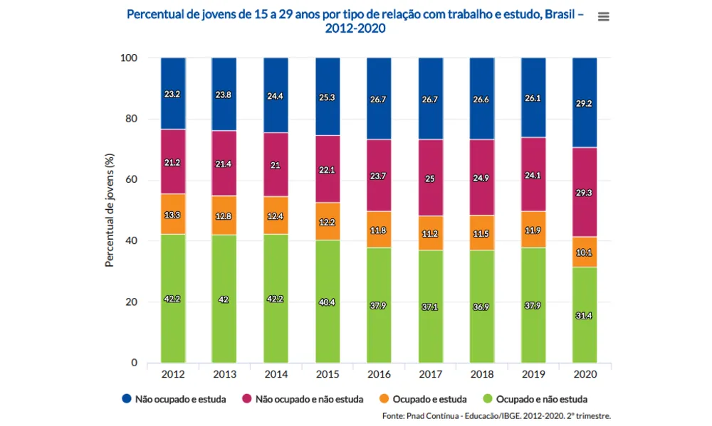
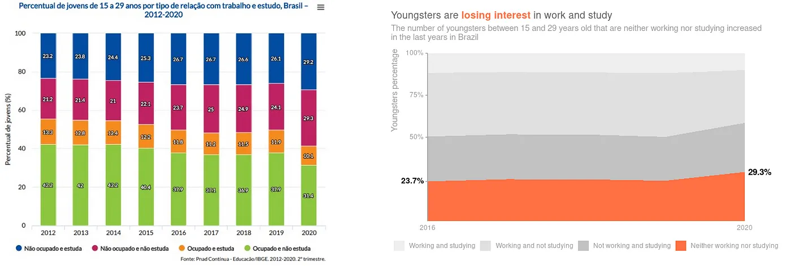
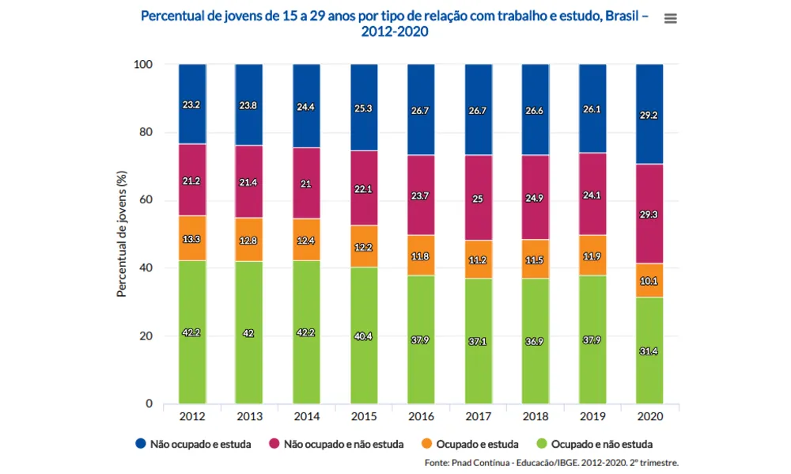
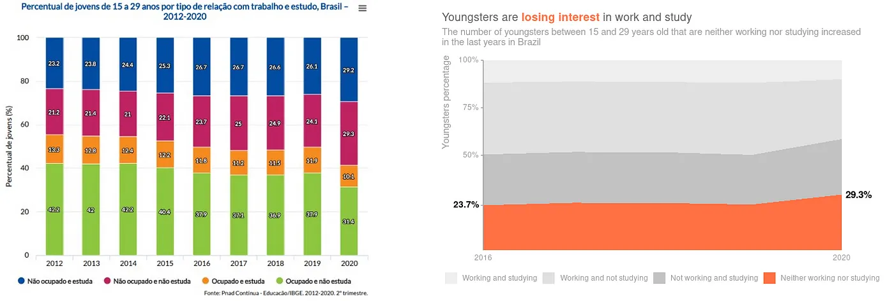

{kind=link}
Global Hunger
Charts with analyses of the world's hunger throughout the last years to show if zero hunger would be achievable until 2030.
Learn more
Data Analyses and Visualisations
We sometimes think a positive, almost linear correlation exists between our income and happiness. But does this happen whatever our income is? Is there a limit on how much influence money has on our well-being? I developed this analysis to show a correlation between money and life satisfaction, trying to understand the influence of money in our lives and if we pursue getting more money it will worth.
Technologies used:

Dashboard showing how each country is improving their renewable energy generation and how it compares to the other kinds of energy.
Technologies used:
 



Whenever we create visualisations, we must ensure that we give the most focused information to our audience. However, this is not always an easy task to achieve. I've written an article describing good techniques to improve data visualisations to make them more useful for presenting information.
Technologies used:
Charts with analyses of the world's hunger throughout the last years to show if zero hunger would be achievable until 2030.
Learn moreThis dashboard was created to help test colour palettes for data visualisations. I used R, ggplot and flexdashboard to develop it.
Learn moreSingle-page static dashboard to show helpful information about worldwide ski resorts.
Learn moreIn this analysis, I tried to expose the influence of some indicators on students enrollment, focusing primarily on Brazil’s context.
Learn more{kind=link}
{kind=link}
{kind=link}